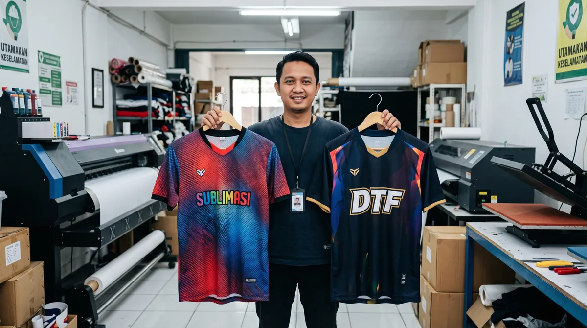

Printing sublimasi dan sablon sama-sama dapat digunakan pada pakaian olahraga, tetapi karakter hasilnya berbeda. Artikel ini membahas aspek yang perlu diperiksa agar keputusan Anda lebih tepat, baik untuk seragam komunitas, tim olahraga, sekolah, maupun kebutuhan acara.
Dalam memilih layanan jersey printing, sebaiknya pertimbangkan bukan hanya tampilan desain, tetapi juga fungsi bahan, ketepatan ukuran, dan kesiapan data pesanan. Untuk gambaran menyeluruh, baca panduan printing jersey Bandung.
Perbedaan pada proses cetak
Sablon umumnya meletakkan tinta pada permukaan kain, sedangkan sublimasi mentransfer zat warna ke polyester dengan panas. Karena itu, rasa permukaan, batasan material, dan kebutuhan desain bisa berbeda.
Desain dan kenyamanan pemakaian
Motif penuh warna dan gradasi sering lebih praktis dibuat dengan sublimasi. Sablon bisa sesuai untuk grafis tertentu, tetapi lapisan tinta yang luas dapat terasa berbeda ketika digunakan untuk aktivitas intens.

Pertimbangan sebelum memilih
Periksa komposisi bahan, luas area cetak, jumlah warna, biaya, jumlah pesanan, dan pemakaian akhir. Minta penjelasan metode yang benar-benar digunakan vendor, bukan hanya berdasarkan istilah promosi.
Langkah praktis sebelum menentukan pilihan
Gunakan panduan ini sebagai titik awal, lalu sesuaikan dengan aktivitas, anggaran, kebutuhan desain, dan jumlah anggota tim. Jika terdapat spesifikasi khusus, komunikasikan sejak awal agar solusi yang ditawarkan tidak hanya terlihat menarik di gambar tetapi juga sesuai saat digunakan.
Untuk kebutuhan produksi di Bandung, pelajari juga panduan printing jersey Bandung yang menjelaskan pilihan bahan, teknik sublimasi, serta alur pemesanan. Anda juga dapat mengenal layanan jersey printing dari Zipzip dan mendiskusikan detail proyek secara langsung.
Artikel terkait yang dapat membantu
- Apa Itu Printing Jersey Sublimasi? Cara Kerja dan Keunggulannya
- Jenis Bahan Jersey Full Printing: Dryfit, Microfiber, dan Interlock
- Tempat Sablon Jersey Bandung
Masih ada pertanyaan tentang spesifikasi atau kebutuhan tim? Hubungi Zipzip untuk membahas opsi yang sesuai dengan desain dan jadwal Anda.